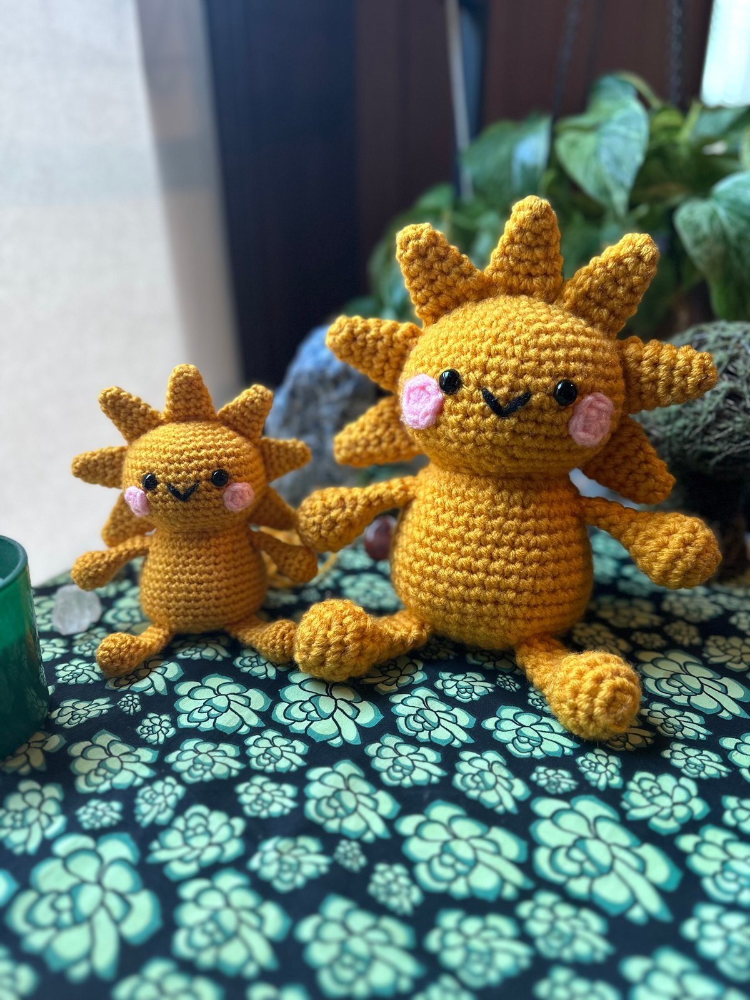

大きいソリーと小さいソリー。どちらもマスタードイエローのかぎ針編みの太陽のあみぐるみで、並んで座っています。Add the Solly pattern coverPublished pattern · 2026
Solly the Sun
A beginner-friendly amigurumi pattern for a cheerful little sun. Includes two finished sizes, clear construction instructions, and assembly notes.
Paid patternUS terminologyTwo sizes
View on Ravelry ↗日本語で読む · Read in Japanese
ソリー・ザ・サンの編み図
太陽のあみぐるみ「ソリー」の初心者向け編み図です。二つのサイズ、作り方、組み立て方の説明が含まれています。
編み図は Ravelry でご覧いただけます。